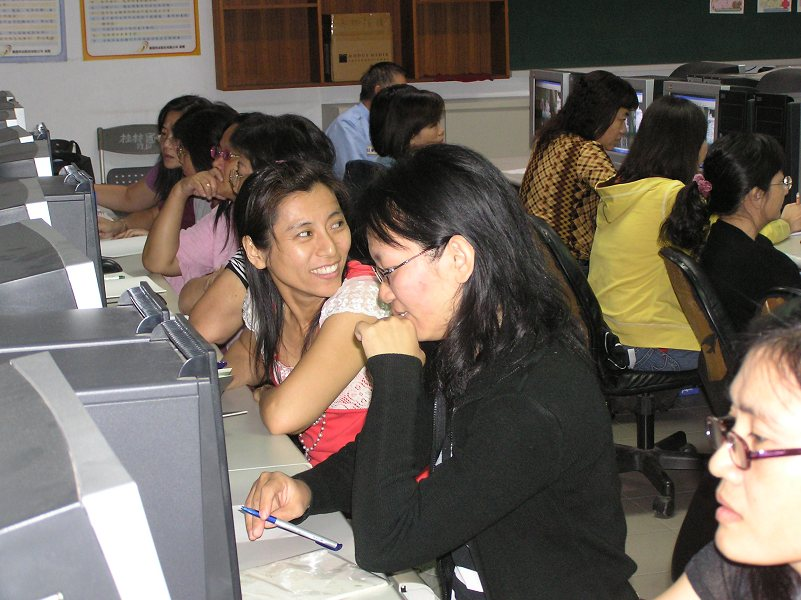

社區教學：辦理社區家長電腦成長班
社區教學：辦理社區家長電腦成長班
 活動地點：桂林國小 1F 電腦教室
活動地點：桂林國小 1F 電腦教室
 活動目的：進入數位化時代，資訊傳遞迅速，資訊化的社會業已來臨，故提升社區家長使用資訊能力，充分運用校電腦設備,提供資源與社區共享，使社區落實終身學習的觀念。
活動目的：進入數位化時代，資訊傳遞迅速，資訊化的社會業已來臨，故提升社區家長使用資訊能力，充分運用校電腦設備,提供資源與社區共享，使社區落實終身學習的觀念。
 活動對象：社區家長【具備電腦基本操作能力】
活動對象：社區家長【具備電腦基本操作能力】
 課程內容：曾上過的課程如下
課程內容：曾上過的課程如下
|
影像處理：光影魔術手 |
電腦動畫：Flash Easy |
網頁製作：Namo WebEditor |
|
影像處理：PhotoCap4 |
